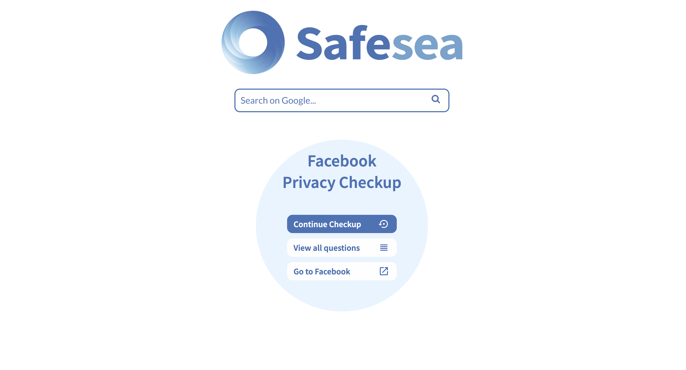
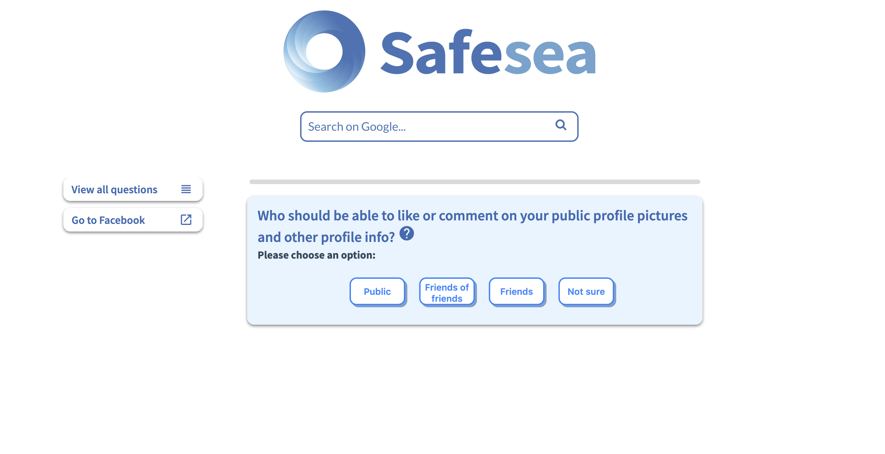
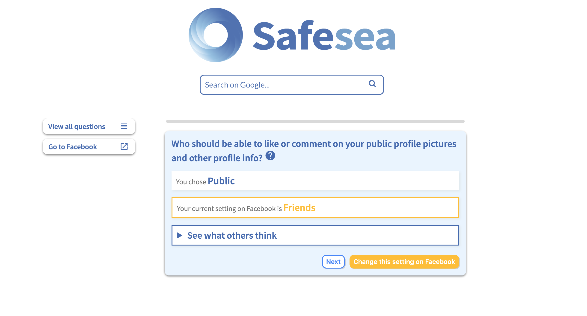
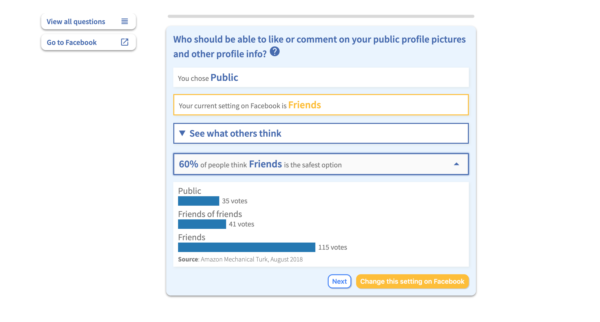

Safesea Chrome Plugin Redesign
   Resources: Design process book.
Overview: This is a research project of Social Cybersecurity in CHIMPS Lab. The goal of this project is to refine the user interface of the Safesea Chrome plugin. Safesea presents Facebook privacy questions in a different way from Facebook. Users could answer privacy questions, see what other people choose, and change their privacy settings. For this project, my job was to fix the problems of the previous designer's design to make it more user-friendly.
Note: Because this is a research project, some design decisions might be best for research purposes, but not necessarily best for design practices. Besides designing, I also programmed the new user interface in React.